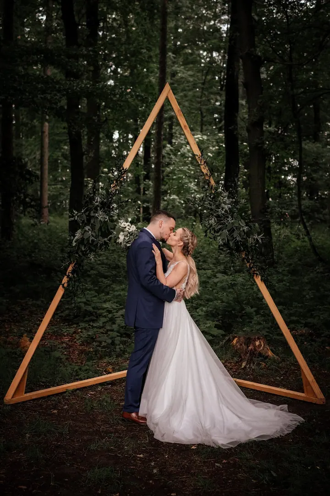
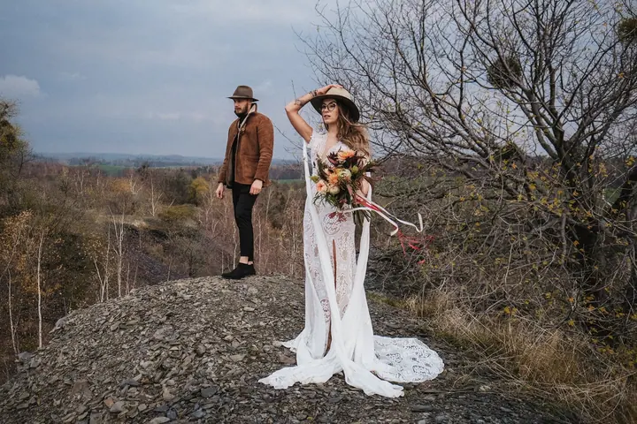

jedna
Svatby
Fotím celý svatební den tak, jak se opravdu odehrává, v přirozeném světle a s důrazem na emoce i detaily. Každá svatba je jiná a jinde, proto vám pošlu nabídku na míru.


Jmenuji se Kamil Kubjatko a fotím svatby po celé Moravě i v Čechách. Svatba pro mě znamená emoce, rodinu a lásku, a proto ji fotím tak, jak se opravdu odehrává, v přirozeném světle a bez zbytečného aranžování.
Více o mně
Co fotím
jedna
Fotím celý svatební den tak, jak se opravdu odehrává, v přirozeném světle a s důrazem na emoce i detaily. Každá svatba je jiná a jinde, proto vám pošlu nabídku na míru.
dvě
Nemáte fotky ze svatby takové, jaké jste si představovali? Oblečete se znovu do svatebního a nafotíme to v termínu, který si spolu domluvíme.
Společné focení pro dva, venku a v přirozeném světle. Vyberete si balíček od MINI po EXCLUSIVE podle toho, kolik fotek chcete mít.
Fotky celé rodiny bez strojeného pózování. Ze všech fotek si sami vyberete ty, které vám upravím.

Přirozené světlo a skutečné emoce.


Za objektivem
Svatby fotím přes 10 let a mám za sebou víc než 250 svatebních dnů. Dokážu zachytit každý detail, a přitom pořád sleduji, co se kolem skutečně děje. Přirozené světlo a emoce tomu dodávají krásu, kterou žádné pózování nenahradí.
Na svatbě nechci být jen člověk s foťákem. Snažím se být kamarádem a součástí vašeho dne, protože jen tak z fotek vznikne příběh, ke kterému se budete rádi vracet.
Fotím od Ostravy a Opavy přes Beskydy, Jeseníky, Olomouc a Brno až po Prahu. Nejraději vás vezmu ven, do lesa, na louku nebo na kopec, kde se světlo samo postará o atmosféru.
Kamil
Napište mi termín a místo svatby. Nabídku na míru vám pošlu do 24 hodin, a když nedorazí, mrkněte prosím do spamu.
Projdeme spolu, jak bude váš den vypadat, co je pro vás důležité a kde by se dalo fotit.
Jsem s vámi a fotím, co se opravdu děje, od detailů po velké emoce. Na společné fotky si najdeme hezké místo a dobré světlo.
Ze všech fotek si vyberete ty, které se vám líbí nejvíc, a já je pro vás upravím.
Portfolio
Otázky
Každá svatba je jiná a jinde, proto vám vždy pošlu konkrétní nabídku na míru. Stačí mi napsat termín a místo.
Focení pro páry, které nemají fotky ze svatby podle svých představ. Vyberete si z 500 fotek, 100 z nich vám upravím a stojí 12 990 Kč. Nedá se objednat na samotný svatební den.
Balíček MINI s 15 upravenými fotkami vyjde na 2 490 Kč, TREND s 25 na 3 490 Kč, MAX se 40 na 4 490 Kč a EXCLUSIVE se 70 upravenými fotkami na 6 490 Kč. Fotky k úpravě si vždy vybíráte sami.
Fotím po Moravě i v Čechách, třeba v Ostravě, Opavě, Olomouci, Brně, v Beskydech, Jeseníkách nebo v Praze. Dopravu účtuji podle dohody a konkrétního místa.
Napište pár vět o tom, co si představujete. · +420 608 852 380